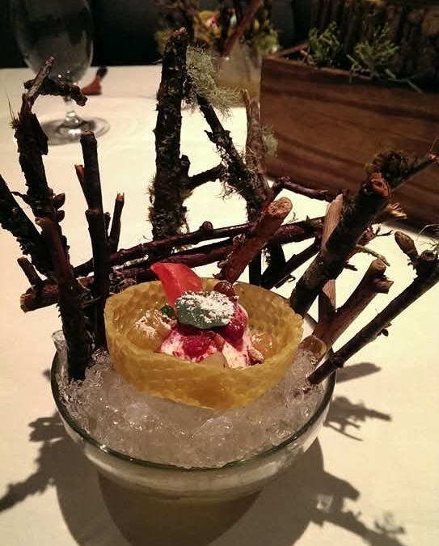
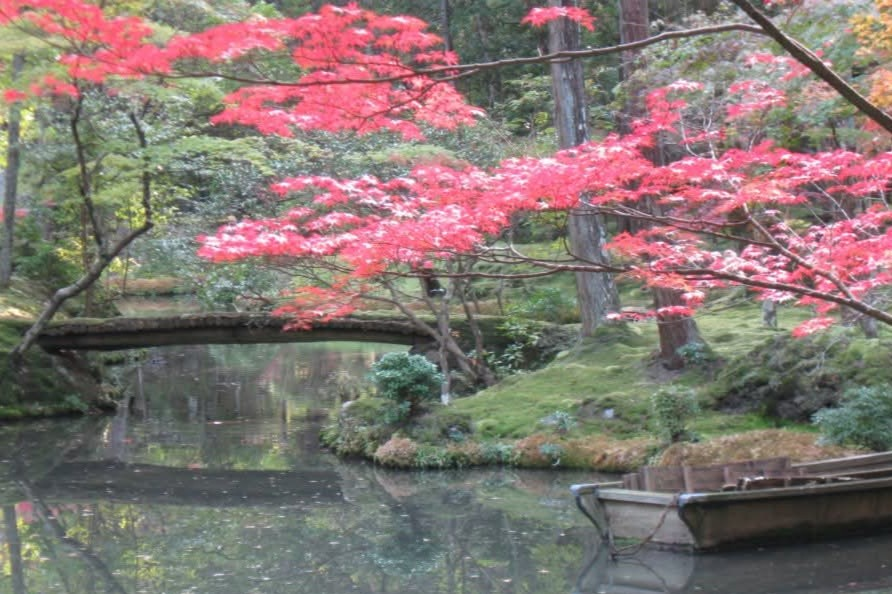
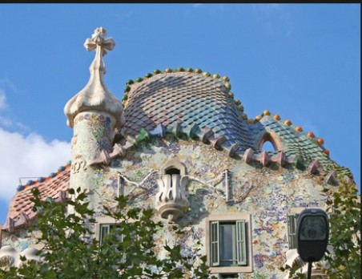

<!DOCTYPE html>
<html>
    <head>
        <title>Lab 2</title>

         <link rel="stylesheet" href="https://unpkg.com/leaflet@1.9.4/dist/leaflet.css"
           integrity="sha256-p4NxAoJBhIIN+hmNHrzRCf9tD/miZyoHS5obTRR9BMY="
           crossorigin=""/>

         <script src="https://unpkg.com/leaflet@1.9.4/dist/leaflet.js"
           integrity="sha256-20nQCchB9co0qIjJZRGuk2/Z9VM+kNiyxNV1lvTlZBo="
           crossorigin=""></script>

    </head>

    <body>
        <div id="map" style="height: 500px"></div>

        <script type="text/javascript">

          var map = L.map('map', {
              center: [57.79,15.43],
              zoom: 3
          });

          L.tileLayer('https://server.arcgisonline.com/ArcGIS/rest/services/Canvas/World_Light_Gray_Base/MapServer/tile/{z}/{y}/{x}', {
               attribution: 'Tiles &copy; <a href="https://www.esri.com/">Esri</a>',
               maxZoom: 3,
               minZoom: 3
            }).addTo(map);
			
			var Next = L.icon({
				iconUrl: 'next.png', // url that links to the icon image file, saved in the same folder as the current page 
				iconSize:     [38, 38], // size of the icon image in pixels
				iconAnchor:   [19, 19], // the top left corner of the icon will be aligned so that this point is at the marker's geographical location
				popupAnchor:  [0, -10] // point from which the popup should open, relative to the iconAnchor
			});
			var Moss = L.icon({
				iconUrl: 'saihoji.png', // url that links to the icon image file, saved in the same folder as the current page 
				iconSize:     [38, 38], // size of the icon image in pixels
				iconAnchor:   [19, 19], // the top left corner of the icon will be aligned so that this point is at the marker's geographical location
				popupAnchor:  [0, -10] // point from which the popup should open, relative to the iconAnchor
			});
			var Batllo = L.icon({
				iconUrl: 'batllo.png', // url that links to the icon image file, saved in the same folder as the current page 
				iconSize:     [38, 38], // size of the icon image in pixels
				iconAnchor:   [19, 19], // the top left corner of the icon will be aligned so that this point is at the marker's geographical location
				popupAnchor:  [0, -10] // point from which the popup should open, relative to the iconAnchor
			});
			
			var pic1 = '';
			var pic2 = '';
			var pic3 =  '';
			
			var marker1 = L.marker([41.886595, -87.652007], {icon: Next, alt: 'Next Restaurant Best ever'}).addTo(map);
			marker1.bindPopup("Next Restaurant, Chicago. Best Ever." + pic1);
			
			var marker2 = L.marker([34.991623,135.683765], {icon: Moss, alt: 'Kokodera Garden Kyoto'}).addTo(map);
			marker2.bindPopup("Garden of Origins and Journeys, Kokodera, Kyoto." + pic2);

			var marker3 = L.marker([41.39399,2.16469], {icon: Batllo, alt: 'Casa Batllo, Barcelona, Spain'}).addTo(map);
			marker3.bindPopup("Casa Batllo, Barcelona. The dragon house." + pic3);
			
			
						
        </script>
   </body>
</html>